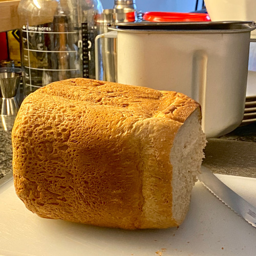

For 1 1/2 lb loaf:
- 300g water (1 1/2 cups)
- 100g ripe sourdough starter (optional)
- 13g olive oil (1 tablespoon)
- 20g honey or sugar (1 tablespoon)
- 7g yeast (2 teaspoons)
- 200g whole wheat flour (1 1/2 cups)
- 200g AP or bread flour (1 1/2 cups)
- 20g vital wheat gluten (2 tablespoons) (optional)
- 8g salt (1 teaspoon)
Mix till smooth dough is formed, adjusting water or flour as needed. Proof for an hour, then punch down and knead dough to fit a loaf pan. Proof another 40 minutes. Bake on lowest rack for ~10 minutes at 400°F, then lower to 350°F
and bake ~30 minutes.
If using in bread machine (T-fal Actibread), place ingredients in that order, then run program 5 adjusting water or flour as needed during mixing until a smooth dough is formed.